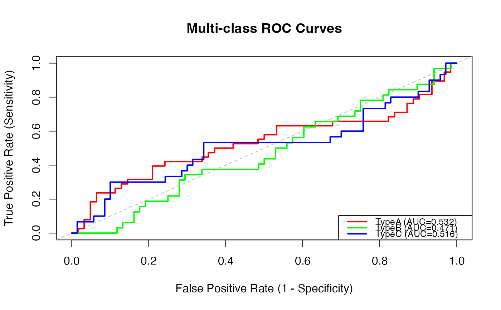

Multi-class ROC Analysis for evaluating diagnostic performance with 3 or more diagnostic classes. This analysis extends traditional binary ROC to handle multi-category outcomes using one-vs-rest, one-vs-one, and global approaches.
Usage
multiclassroc(
data,
outcome,
predictors,
method = "ovr",
calculate_macro_auc = TRUE,
calculate_micro_auc = TRUE,
calculate_weighted_auc = TRUE,
confidence_intervals = TRUE,
ci_method = "bootstrap",
bootstrap_samples = 1000,
confidence_level = 0.95,
pairwise_comparisons = FALSE,
confusion_matrix = TRUE,
class_metrics = TRUE,
plot_roc_curves = TRUE,
plot_method = "overlay",
plot_diagonal = TRUE,
random_seed = 42
)Arguments
- data
the data as a data frame
- outcome
a string naming the outcome variable (must have 3+ levels)
- predictors
a vector of strings naming predictor variables (continuous scores)
- method
method for multi-class ROC: 'ovr' (one class vs all others), 'ovo' (all pairwise comparisons), or 'multinomial' (global probability model)
- calculate_macro_auc
calculate macro-average AUC across all classes (unweighted mean)
- calculate_micro_auc
calculate micro-average AUC (aggregate all predictions)
- calculate_weighted_auc
calculate weighted-average AUC (weighted by class prevalence)
- confidence_intervals
calculate confidence intervals for AUC estimates
- ci_method
method for confidence interval calculation
- bootstrap_samples
number of bootstrap samples for CI calculation
- confidence_level
confidence level for intervals (default: 0.95 for 95 percent CI)
- pairwise_comparisons
show detailed results for all pairwise class comparisons (OvO method)
- confusion_matrix
show confusion matrix at optimal global threshold
- class_metrics
calculate sensitivity, specificity, PPV, NPV for each class
- plot_roc_curves
plot ROC curves for each class
- plot_method
display method for ROC curves
- plot_diagonal
show diagonal reference line (random classifier)
- random_seed
random seed for reproducible bootstrap sampling
Value
A results object containing:
results$instructionsText | a html | ||||
results$summaryTable | a table | ||||
results$classAucTable | a table | ||||
results$pairwiseTable | a table | ||||
results$classMetricsTable | a table | ||||
results$confusionMatrix | a table | ||||
results$rocPlot | an image | ||||
results$interpretationText | a html |
Tables can be converted to data frames with asDF or as.data.frame. For example:
results$summaryTable$asDF
as.data.frame(results$summaryTable)
Details
Common applications include tumor subtype classification, disease staging with multiple levels, and AI model validation for multi-class predictions.
Examples
# \donttest{
# Example with tumor subtype classification
data <- data.frame(
true_class = factor(sample(c("TypeA", "TypeB", "TypeC"), 100, replace=TRUE)),
score_A = rnorm(100),
score_B = rnorm(100),
score_C = rnorm(100)
)
multiclassroc(
data = data,
outcome = 'true_class',
predictors = c('score_A', 'score_B', 'score_C'),
method = 'ovr',
calculate_macro_auc = TRUE,
confidence_intervals = TRUE
)
#>
#> MULTI-CLASS ROC ANALYSIS
#>
#> Multi-class ROC Analysis
#>
#> This analysis evaluates diagnostic performance for outcomes with 3 or
#> more classes.
#>
#>
#>
#> Methods:
#>
#>
#> One-vs-Rest (OvR): Each class is compared against all other classes
#> combined
#> One-vs-One (OvO): All pairwise comparisons between classes
#> Multinomial: Global probability model across all classes
#>
#>
#>
#> Averaging Methods:
#>
#>
#> Macro-Average: Unweighted mean of per-class AUCs
#> Micro-Average: Aggregates all predictions (better for imbalanced data)
#> Weighted-Average: Weighted by class prevalence
#>
#>
#>
#> Common applications: Tumor subtype classification, disease staging, AI
#> multi-class validation
#>
#> Multi-class ROC Summary
#> ──────────────────────────────────────────────────────────────────────────────────────────────────────────────────────────────────────────────────────────
#> Number of Classes Method Macro-Average AUC Lower CI Upper CI Micro-Average AUC Lower CI Upper CI Weighted-Average AUC
#> ──────────────────────────────────────────────────────────────────────────────────────────────────────────────────────────────────────────────────────────
#> 3 One-vs-Rest 0.5063456 0.3786915 0.6339342 0.5063456 0.3786915 0.6339342 0.5077034
#> ──────────────────────────────────────────────────────────────────────────────────────────────────────────────────────────────────────────────────────────
#>
#>
#> Per-Class AUC Values
#> ──────────────────────────────────────────────────────────────────────────────────────
#> Class N Prevalence AUC Lower CI Upper CI Interpretation
#> ──────────────────────────────────────────────────────────────────────────────────────
#> TypeA 38 0.3800000 0.5322581 0.4047351 0.6637310 Fail
#> TypeB 32 0.3200000 0.4705882 0.3528861 0.5920990 Fail
#> TypeC 30 0.3000000 0.5161905 0.3784532 0.6459725 Fail
#> ──────────────────────────────────────────────────────────────────────────────────────
#>
#>
#> Per-Class Performance Metrics
#> ───────────────────────────────────────────────────────────────────────────────────────────────────
#> Class Sensitivity Specificity PPV NPV F1-Score Optimal Threshold
#> ───────────────────────────────────────────────────────────────────────────────────────────────────
#> TypeA 0.3947368 0.7903226 0.5357143 0.6805556 0.4545455 0.6207447
#> TypeB 0.3437500 0.7058824 0.3548387 0.6956522 0.3492063 0.5161487
#> TypeC 0.3000000 0.9000000 0.5625000 0.7500000 0.3913043 0.9269109
#> ───────────────────────────────────────────────────────────────────────────────────────────────────
#>
#>
#> Confusion Matrix
#> ─────────────────────────────────────────
#> True Class TypeA TypeB TypeC
#> ─────────────────────────────────────────
#> TypeA 17 11 10
#> TypeB 9 12 11
#> TypeC 10 9 11
#> ─────────────────────────────────────────
#>
#>
#> Interpretation Guide
#>
#>
#>
#> AUC Interpretation:
#>
#>
#> 0.90-1.00: Excellent discrimination
#> 0.80-0.90: Good discrimination
#> 0.70-0.80: Fair discrimination
#> 0.60-0.70: Poor discrimination
#> 0.50-0.60: Fail (barely better than chance)
#>
#>
#>
#> Method Selection:
#>
#>
#> OvR: Best for class imbalance, interpretable per-class performance
#> OvO: All pairwise separability, useful for similar classes
#> Multinomial: Global model performance
#>

# }